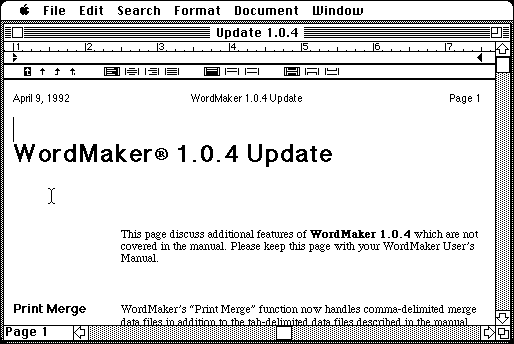

Download
wordmaker-1.0.4.zip (700K) WordMaker 1.0.4 and source code repackaged into a zipped hfs disk image and checksum file. The disk image can be mounted with Mini vMac.
wordmaker-master-7ccf.tar.gz (618K) WordMaker 1.0.4 source code in the original format.
copyright: Canux Corporation
mod date: Apr 7, 2018
license: GPL
official url :
Amiga Source Code Preservation / wordmaker
Word processor for Macintosh, now under GNU General Public License (GPL).

WordMaker was originally sold by New Horizons Software, Inc., which mostly developed software for Amiga. The current copyright holder has placed this software under GPL for the Amiga Source Code Preservation group.
The available source to WordMaker does not seem to be quite complete, but it does contain a Think C project file with built code, which was used to generate the application in the disk image provided here. The missing source files might in part, or entirely, be found in other New Horizons source code available from the Amiga Source Code Preservation group.
If you find these downloads useful, please consider helping the Gryphel Project, which hosts them.
Here are the md5 checksums for the downloads, signed with Gryphel Key 5:
--------- GRY SIGNED TEXT --------- cd005c86c9d2a180d6fca3c9d22e0874 wordmaker-1.0.4.zip 00b12a8a0d8d0600744ce6d908dce0ba wordmaker-master-7ccf.tar.gz ------- BEGIN GRY SIGNATURE ------- Gry/4Xa8CFcUzxdN/KZkWLhTkOifbbYX0pt1LVqLIig2SMW7bUeDRjIbecKFhaG6 0k0/OQHeWxmaTchbOtvZBDYpmxMqbAxNITR20XYUUyHmfbWG8IHEfS8z6DhNeQKd rH4osWIUaw0qZraS2tS8r2X/swfyHlcxo7yAHBsd1WovxOOhjrWfYX7z3d9J0Ivb -------- END GRY SIGNATURE --------